(Genuine, image obtained from a Siegel auction)
Return To Catalogue - Baltimore issues - New York issues - Semi-official stamps for Charleston - United States - Local issues in the Confederate States
Note: on my website many of the
pictures can not be seen! They are of course present in the cd's;
contact me if you want to purchase the catalogue.
(Genuine, image obtained from a Siegel auction)
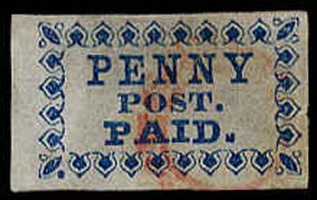
Genuine stamp
"PENNY POST", 1 c blue "PENNY POST PAID.", 1 c blue
Value of the stamps |
|||
vc = very common c = common * = not so common ** = uncommon |
*** = very uncommon R = rare RR = very rare RRR = extremely rare |
||
| Value | Unused | Used | Remarks |
| "PENNY POST" | RRR | RRR | |
| "PENNY POST PAID" | RRR | RR | |
This forgery has an outline all around the design. There is no "." behind "POST".
A forger (Benson?) has made forgeries in many bogus colors on bogus color paper, closely resembling the above Scott forgeries. Sorry, no image available yet.
There is an outline around the stamp. Also, the positioning of the letters is different from the genuine stamps. I've seen this forgery in blue, black on blue and blue on lilac.
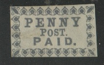
(reduced size)
A forger (Benson?) has made forgeries in many bogus colors on bogus color paper, closely resembling the above Scott forgeries. Sorry, no image available yet.
A bogus stamp, similar in design to the Louisville stamp, but
with inscription "B.S & Co BOSTON"
"BISHIP'S CITY POST CLEVD. O."; two stamps were issued. The first one is in blue color and has no value indication. The second one is in black and has a large '2' in the center elliptic design. they are both extremely rare:
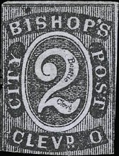
(Genuine, reduced sizes, images obtained from a Siegel auction)
Value of the stamps |
|||
vc = very common c = common * = not so common ** = uncommon |
*** = very uncommon R = rare RR = very rare RRR = extremely rare |
||
| Value | Unused | Used | Remarks |
| Both values | RRR | RRR | |
2 c green, Wharton; image obtained from a Pennypost auction:
http://www.pennypost.org
(Genuine, image obtained from a Siegel auction)
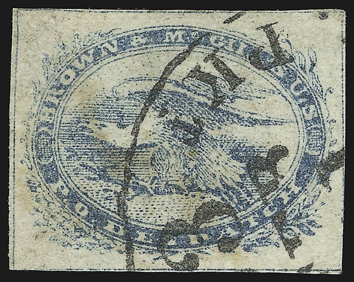
(Genuine, image obtained from a Siegel and a Cherrystone auction)
2 c green (WHARTON) 2 c blue (BROWN) 2 c black (BROWN)
Value of the stamps |
|||
vc = very common c = common * = not so common ** = uncommon |
*** = very uncommon R = rare RR = very rare RRR = extremely rare |
||
| Value | Unused | Used | Remarks |
| 2 c green (Wharton) | RR | RR | |
| 2 c blue | RRR | RRR | |
| 2 c black | RRR | RRR | Only 13 unused stamps known |
Forgeries:
Forgeries, the eye is a line only.
Same forgery as shown above, but in the wrong color violet:
(reduced size)
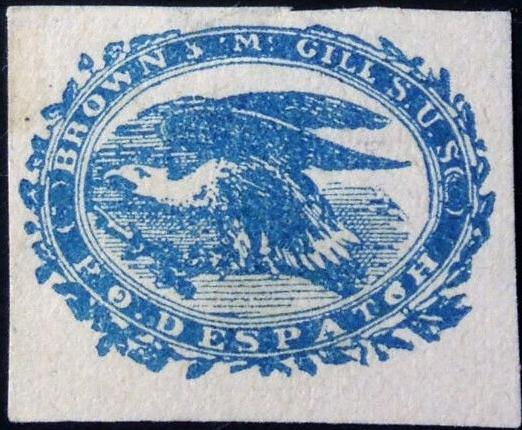
Forgeries resembling the above ones, but with 'normal' eye
I've also seen a forgery in the colour orange (Brown & Mc Gills).
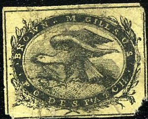
Three other forgeries, made by the same forger, I've also seen
these forgeries in the colors brown and lilac.
Another very dubious item
Forgery
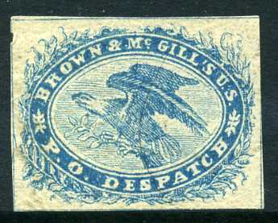
In this forgery, the head of the eagle points towards the 'R' of
'BROWN'. It was made by George Hussey.
For issues of New York click here (head of Washington, inscription "CITY DESPATCH POST", or "US MAIL PREPAID" in a circle), examples:
(Reduced sizes, images obtained from a Siegel auction)
(Genuine, images obtained from a Siegel auction)
(Reduced sizes, genuine, images obtained from a Siegel auction)
1 c black on lilac 1 c black on blue 1 c black on red 1 c black on yellow 1 c black on brown
Of the 1 c black on lilac, several types exist with letters added in the design.
Value of the stamps |
|||
vc = very common c = common * = not so common ** = uncommon |
*** = very uncommon R = rare RR = very rare RRR = extremely rare |
||
| Value | Unused | Used | Remarks |
| All values | RRR | RRR | |
Forgery:
The next stamps are probably forgeries or reprints:
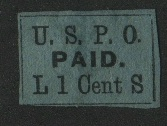
Most likely a Scott forgery
I've also seen forgeries in many bogus colors.
(Genuine? with red star cancel)
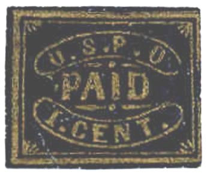
Genuine stamps, left with red star cancel
(Image obtained from a Siegel auction)
(Reduced sizes, genuine, images obtained from a Siegel auction)
1 c gold on black 1 c blue 1 c black (very rare)
Value of the stamps |
|||
vc = very common c = common * = not so common ** = uncommon |
*** = very uncommon R = rare RR = very rare RRR = extremely rare |
||
| Value | Unused | Used | Remarks |
| All values | RRR | RRR | |
Forgeries? Note the ornaments below the "O" of
"USPO".
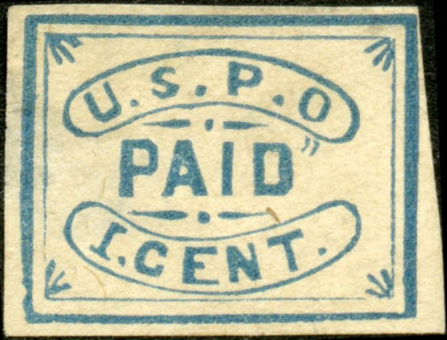
I've been told that this forgery was made by Taylor. It also has
ornaments below the "O" of 'USPO", but is
different from the above forgery.
Yet another set of forgeries, which also has ornaments below the
"O" of 'USPO", but is different from the above
forgeries once more.
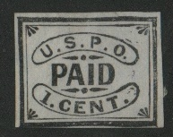
I've also seen forgeries in many bogus colors: brown, red, green.
The following label, with inscription "P.O. PAID One Cent" was probably not a postage stamp (another label with inscription "P.O. PAID 1 Cent" exists):
(Reduced size, image obtained from a Siegel auction)
(Genuine, image obtained from a Siegel auction)
(Reduced size, genuine)
1 c blue 1 c blue on blue 1 c black 1 c red
Envelopes in the same design exist in the values: 1 c blue and 1 c red.
Value of the stamps |
|||
vc = very common c = common * = not so common ** = uncommon |
*** = very uncommon R = rare RR = very rare RRR = extremely rare |
||
| Value | Unused | Used | Remarks |
| All values | RRR | RRR | |
(Genuine, image obtained from a Siegel auction)
1 c black
Envelopes exist in the same design in the values: 1 c black, 1 c blue, 1 c black on blue, 1 c red and 1 c red on blue.
Value of the stamps |
|||
vc = very common c = common * = not so common ** = uncommon |
*** = very uncommon R = rare RR = very rare RRR = extremely rare |
||
| Value | Unused | Used | Remarks |
| 1 c | RRR | RRR | |
(Genuine, images obtained from a Siegel auction)
2 c black
Older catalogues believe that this stamp was issued in Boston, for example my Senf 1938 catalogue (but they say that it might have been issued for St.Louis) or my Scott 1925 catalogue and Yvert et Tellier 1931 catalogue. Only 14 stamps are known to have survived (two types exist, note the different ornaments in the upper corners).
Value of the stamps |
|||
vc = very common c = common * = not so common ** = uncommon |
*** = very uncommon R = rare RR = very rare RRR = extremely rare |
||
| Value | Unused | Used | Remarks |
| 2 c | RRR | RRR | |
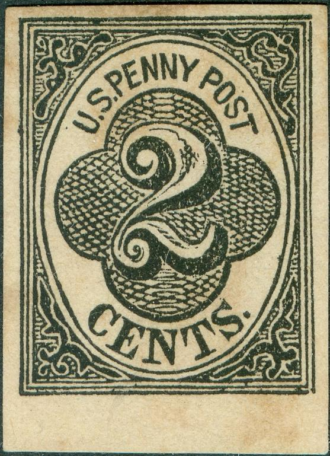
Forgery, with in my opinion a too large serif on the
"S" of "CENTS".
A forgery of this stamp, printed in red:
Forgery in wrong colours: red or blue. Next to it the same
forgery in the correct color black. Note the broken "S"
of "US" and the absence of star-like symbol on the
upper right hand side of the '2'. I've also seen this forgery is
bluish-grey color.
I've seen forgeries in other bogus colors: green, blue, brown on yellow, brown.
(Genuine, image obtained from a Siegel auction)
2 c blue
This stamp is even rarer than the previous one; only five stamps are known to have survived.
(1 c) blue on red
Value of the stamps |
|||
vc = very common c = common * = not so common ** = uncommon |
*** = very uncommon R = rare RR = very rare RRR = extremely rare |
||
| Value | Unused | Used | Remarks |
| (1 c) | RRR | RRR | |
I've seen a cancel consisting of a small red star, but also the circular townname 'NEW YORK' in red or black.
Reprints exist, some of them on the reddish paper of the genuine stamps, others on white paper. Also some perforated reprints exist (RRR: the perforation is 12).
(Images obtained thanks to William Stevens, probably reprints)
Some forgeries of the Carrier Stamp with the portrait of Washington facing the right hand side made by the forger Taylor.
1 c blue
Value of the stamps |
|||
vc = very common c = common * = not so common ** = uncommon |
*** = very uncommon R = rare RR = very rare RRR = extremely rare |
||
| Value | Unused | Used | Remarks |
| 1 c | *** | R | |
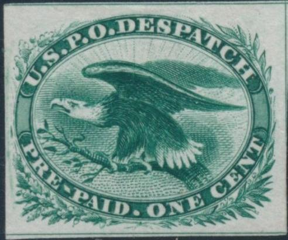
Stamps in different colors are proofs.
Perforated and imperforate reprints exist, example of a perforate reprint:
Forgery
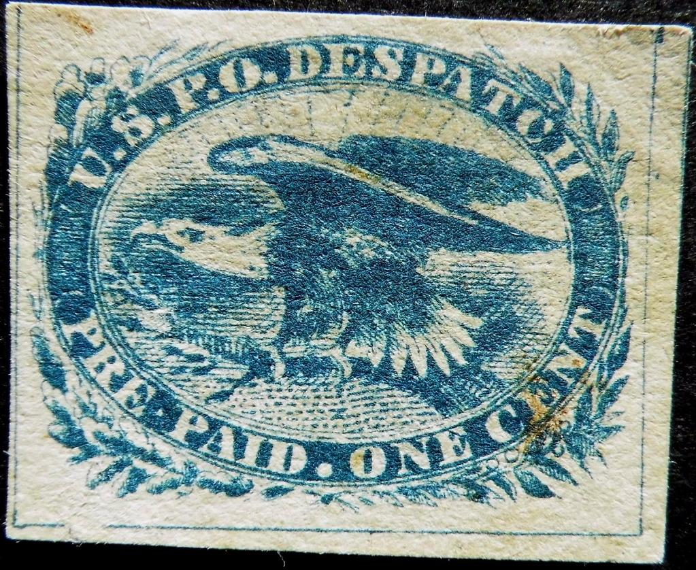
Possible forgery, the details of the leaves and branches are all
slightly different from the genuine stamps. Also the two circles
(berries?) below the "C" of "CENT" are larger
than in the genuine stamps.
20,000 reprints were prepared for the Centennial Exposition in 1876.
{kind=link}
{kind=link}
{kind=link}
{kind=link}
{kind=link}
{kind=link}
{kind=link}
{kind=link}
{kind=link}
{kind=link}
{kind=link}
{kind=link}
{kind=link}